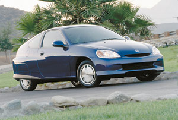
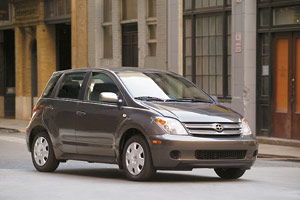
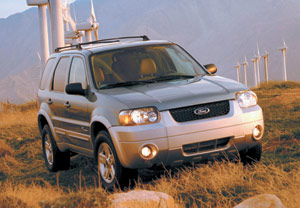
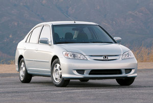
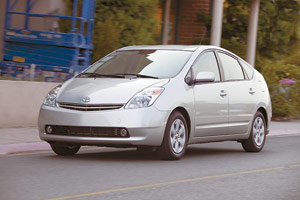
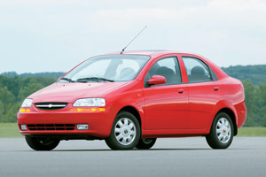
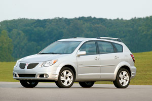
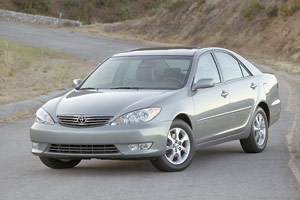
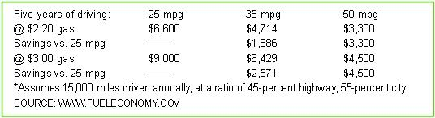

Buckle up, America - the era of cheap oil is over. Whether the road ahead for gasoline prices will be a steep climb or an undulating trip through peaks and valleys is anyone’s guess. But don’t expect to see gas prices drop below $2 a gallon ever again. The U.S. Department of Energy (DOE) projects the national average will remain above $2.20 per gallon through 2006. Odds are you’re already feeling the pinch of this trend - this summer gas prices were up about 35 cents per gallon compared to the summer of 2004.
Drive a more fuel-efficient vehicle, however, and you can save a substantial amount of money. Even if gas remains steady at $2.20 a gallon, annual gas expenses for a car that gets 25 miles per gallon (mpg) will total about $1,320. Switch to a 35-mpg car, though, and you’ll save $377 a year; a 50-mpg hybrid will save you $660 a year. Over a five-year period, the savings will add up to $1,886 and $3,300, respectively.
There also are benefits greater than saving money. “Choosing which vehicle to drive is one of, if not the, most important environmental decisions a person can make,” says James Kliesch, principal vehicle analyst for the American Council for an Energy-Efficient Economy (ACEEE) and lead author of ACEEE’s annual environmental guide to cars and trucks.
So don’t settle for anything near the average U.S. fuel economy of 21 mpg. To find the greenest car, station wagon, truck or sport utility vehicles (SUV) for you, check out the charts in the Image Gallery. The first group shows 47 vehicles from model years 2001 to 2005 rated with at least 35 mpg in city or highway driving. With the second set, you'll find the greenest and most fuel-efficient 2005 models among specfic size categories. Information listed for each vehicle model includes price, fuel economy, annual fuel cost, and scores for air pollution, greenhouse gases and overall environmental impact (all described in detail below).
When shopping for a vehicle, you balance numerous considerations, including price, safety features, dependability, size and fuel economy. Which of these become most important depends on individual needs and preferences. In today’s market, though, you can find a model that provides what you need and want, and that is best among its competition with regard to emissions and fuel economy - the two dominant influences over an automobile’s environmental footprint.
“Within each vehicle class, there are a number of standout models that allow you to make an eco-friendly - or at least eco-friendlier - decision without sacrificing features,” Kliesch says. “First, consider your needs for the vehicle, as well as your price range. Once you have those down, begin shopping with the environment in mind.”
Consider whether your needs will be ongoing (room for the whole family) or only occasional (four-wheel drive for off-road activities), Kliesch adds. For those occasional situations, it’s more cost-effective to rent an appropriate vehicle. Also, don’t pigeonhole yourself into one class - for example, several sedans, station wagons and smaller SUVs offer the functionality of their larger competitors, but they guzzle less gas and spew less pollution.
When weighing your final choices, pick the greener vehicle. The decision will save you hundreds of dollars a year in fuel costs, and you’ll contribute less to pollution and our oil dependence. Plus, you’ll send a powerful signal to automakers: Green means go.
The charts in the Image Gallery list fuel economy averages calculated by the Environmental Protection Agency (EPA) for city and highway driving. Using those numbers, the EPA also estimates annual fuel costs - assuming 15,000 miles driven annually (at a ratio of 45-percent highway driving, 55-percent city driving) and a price of $2.29 a gallon for regular gasoline; $2.34 for diesel; and $2.49 for premium gasoline.
The EPA’s 30-year-old fuel economy tests, though, do not account for several modern influences on driving, including air conditioning, urban congestion and speeds greater than 60 mph. The EPA says that real-world results may differ because it’s impossible to simulate all conditions. To help compensate, the EPA trims fuel economy numbers by about 15 percent before publishing the results. But even so, the final numbers are still an average of 10 percent too high, according to the Energy Information Administration of the DOE. Nevertheless - depending on how you drive - you can achieve or get close to the EPA’s fuel economy average.
“Drive with fuel economy in mind,” says David Friedman, research director for the Clean Vehicles Program with the Union of Concerned Scientists. “Keep away from jack rabbit starts and drive closer to the speed limit; that will not only save gas, but may just save your life. Keep your vehicle well-maintained and check your tires, ideally every time you refuel, but at least once a month. A small loss in tire pressure means a big increase in the amount of fuel you’re going to use.”
Almost a third of the air pollution in the United States comes from passenger vehicles. These tailpipe emissions - nitrogen oxides, volatile organic hydrocarbons, carbon monoxide and particulate matter - are the byproducts of the engine’s combustion process and the evaporation of fuel. They create smog and acid rain, and are damaging to both natural ecosystems and human health. High levels of air pollutants - especially particulate matter - are a serious health risk for those with respiratory problems or heart disease, which is why the EPA closely monitors and reports on local air-quality conditions. (For more information, visit www.airnow.gov.)
To help you easily judge a vehicle’s emissions, the EPA provides air pollution scores for specific models, with zero signaling the most pollution and 10 the least. Each score reflects a set of limits for tailpipe emissions. When kept properly maintained, the vehicle model will emit no more than those limits.
Choose a fuel-efficient vehicle and you’ll also reduce your contribution to global warming. The more gas a vehicle burns, the more it emits carbon dioxide (CO2), a greenhouse gas that traps the Earth’s heat and plays a significant role in climate change. For example, a 25-mpg vehicle emits 11,640 pounds of CO2 a year. A 35-mpg vehicle emits 3,326 fewer pounds of CO2 each year; a 50-mpg hybrid releases 5,820 fewer pounds annually. The type of fuel also impacts its greenhouse gas emissions. Diesel fuel produces more CO2 than gasoline, whereas natural gas and E85 (85 percent ethanol, 15 percent gasoline) produce less.
As with air pollution, the EPA also provides a greenhouse gas score for every vehicle model (listed as “GH Score” in the charts). The rating ranges from zero to 10 - the higher the number, the less greenhouse gases the vehicle emits.
To gauge the entire environmental impact of a specific vehicle model, check the charts for the ACEEE Green Score. To calculate this annual rating, experts at ACEEE research each model’s fuel economy and emissions, the pollution from the production and distribution of its fuel, and the environmental impacts of its manufacturing process. That data is quantified into a score from zero to 100 - the higher the number, the more friendly the vehicle is to the environment. With a 57, the Honda Civic GX - which uses natural gas for its fuel - earned the top ranking for model year 2005. The average green score for all 2005 vehicle models is 27.
John Rockhold is the senior associate editor for Mother Earth News. He drives a 2001 Honda Civic. His best-ever gas mileage is 41 mpg.
Guide to car buying from the American Council for an Energy-Efficient Economy.
Environmental Protection Agency
MPG data and a savings calculator; air pollution and greenhouse gas scores.
News and information on electric, hybrid and alternative-fuel vehicles.
Quarterly magazine with car reviews and technology features.
Comprehensive source for hybrid information: news, technology, incentives, blogs and shopping tools.
Hybrid Center
Consumers’ guide to hybrids from the Union of Concerned Scientists (UCS).
UCS Clean Vehicles Program
Learn more about UCS research and take action to improve fuel economy standards.
|
 COURTESY HONDA Honda Insight Hybrid |
COURTESY FORD Ford Ranger |
 COURTESY SCION Scion xA |
|
 COURTESY FORD Ford Escape Hybrid |
 COURTESY HONDA Honda Civic Hybrid |
 COURTESY TOYOTA Toyota Prius Hybrid |
|
 COURTESY CHEVROLET Chevrolet Aveo |
 COURTESY PONTIAC Pontiac Vibe |
 COURTESY TOYOTA Toyota Camry |
|
 JOHN ROCKHOLD/FUELECONOMY.GOV |
|
|